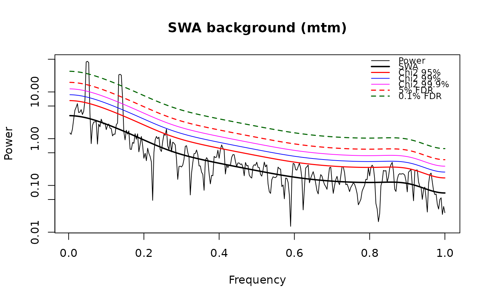
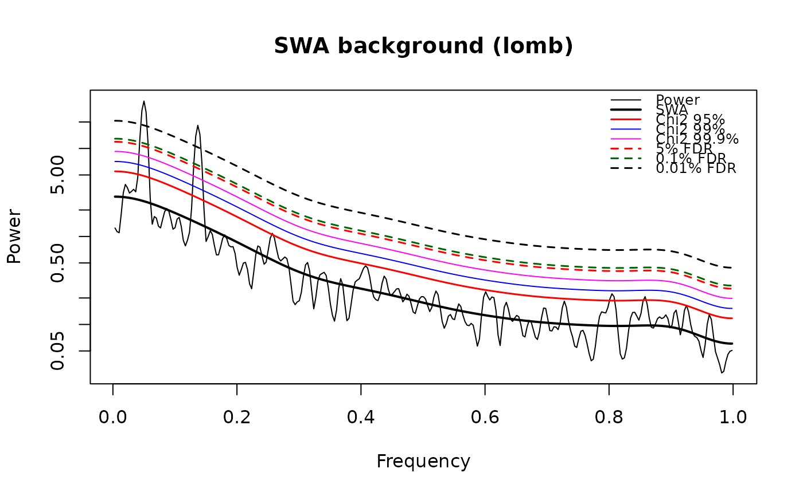

Power spectrum with SWA background, chi-square and FDR confidence levels
Source:R/swa_spectrum.R
swa_spectrum.RdCalculates a power spectrum, locates the spectral background with the Smoothed Window Average (SWA) method (Kemp, 2016; Weedon, 2020, 2022) and derives chi-square confidence levels and False Discovery Rate (FDR) confidence levels (Benjamini and Hochberg, 1995) following the procedure of Miller et al. (2001), with the correlation of neighbouring spectral estimates accounted for as in Hopkins et al. (2002).
Two spectral estimators are available:
method = "mtm"Multi-taper spectrum of the (evenly spaced, zero-mean) series, SWA background from
swa_background. Degrees of freedom = 2K (K = number of tapers). This is the SWA option of the Acycle spectral analysis window. Translated from Acycle v3.1 spectralswafdr.m (Mingsong Li).method = "lomb"The program of Weedon (2020, 2022) used by the Acycle SWA window: lag-1 check, linear detrending, 5% cosine taper, Lomb-Scargle transform (routine PERIOD of Press et al., 1992; allows unevenly spaced data or data with gaps), three passes of a Hanning spectral window (8 degrees of freedom), SWA background, chi-square and FDR confidence levels. Translated from Acycle v3.1 specswafdr.m (Graham Weedon, Mingsong Li).
Usage
swa_spectrum(
data = NULL,
method = "mtm",
nw = 2,
pad_times = 1,
background = "specswa",
genplot = FALSE,
verbose = FALSE
)Arguments
- data
Record to analyse (required): matrix or data frame with depth/time in column 1 and the proxy value in column 2. Rows are sorted on the first column and non-finite rows removed. For
method = "mtm"the data must be evenly spaced; as in Acycle the series is used as is (remove the mean/trend beforehand).method = "lomb"also accepts unevenly spaced data or data with gaps.Default=NULL.- method
Spectral estimator (character):
"mtm"(multi-taper spectrum) or"lomb"(Lomb-Scargle program of Weedon); see Description.Default="mtm".- nw
Time-bandwidth product of the multi-taper spectrum (numeric, > 0;
method = "mtm"only). It sets the number of tapers (2 xnw- 1, or 2 fornw = 1) and so the degrees of freedom and the smoothing of the spectrum.Default=2.- pad_times
Zero-padding factor (numeric;
method = "mtm"only): nfft = max(n, round(pad_times* n)), so values <= 1 give no padding and larger values a finer frequency grid.Default=1.- background
Background fit used for
method = "lomb"(character):"specswa"usesswa_background(current specswa.m algorithm, also used bymethod = "mtm");"legacy"reproduces the older SWA fit coded inside specswafdr.m, i.e. exactly what the Acycle SWA window reports (not allowed withmethod = "mtm").Default="specswa".- genplot
Plot the spectrum, the background and the confidence levels (logical).
Default=FALSE.- verbose
Print progress information (logical, TRUE or FALSE).
Default=FALSE.
Value
A list with elements
- freq
Frequencies.
- power
Spectral power used for testing (MTM PSD, or the Hanning-smoothed Lomb-Scargle spectrum normalised by the variance).
- periodogram
(
"lomb"only) raw normalised Lomb-Scargle periodogram before Hanning smoothing.- swa
SWA background.
- chi2_factor
Multiplication factors of the background for the 90, 95, 99, 99.9 and 99.99% chi-square confidence levels.
- chi2_cl
Matrix with the chi-square confidence levels (columns chi90, chi95, chi99, chi999, chi9999).
- fdr_cl
Matrix with the FDR confidence levels (columns fdr10, fdr5, fdr1, fdr01, fdr001 for 10, 5, 1, 0.1 and 0.01% FDR). As in Acycle a column is NA when the level is not reached or does not differ from the next less strict level; the 10% column is always NA in Acycle (kept for compatibility).
- fdr
Data frame per FDR level:
n_rejected(number of frequencies declared significant, -1 = none),factor(multiplication factor of the background),chi2_cl_percent(equivalent chi-square confidence level) anddrawn(whether the level is present infdr_cl).- alpha
Probability (p-value on the Acycle grid) of every spectral estimate.
- variance_ratio
power / swa.
- dof
Degrees of freedom.
- cn
Hopkins et al. (2002) correction constant.
- bandwidth, rayleigh
Resolution bandwidth and Rayleigh frequency.
- n_windows, diagnostics
Selected SWA window width and fit diagnostics.
- rho1
(
"lomb"only) lag-1 autocorrelation of the input.- irregular
(
"lomb"only) TRUE if the spacing varies by more than 5%.
References
Benjamini, Y., Hochberg, Y., 1995. Controlling the false discovery rate: a practical and powerful approach to multiple testing. Journal of the Royal Statistical Society B 57, 289-300.
Hopkins, A.M., Miller, C.J., Connolly, A.J., Genovese, C., Nichol, R.C., Wasserman, L., 2002. A new source detection algorithm using the false-discovery rate. The Astronomical Journal 123, 1086-1094.
Kemp, D.B., 2016. Optimizing significance testing of astronomical forcing in cyclostratigraphy. Paleoceanography 31, 1516-1531.
Miller, C.J., Genovese, C., Nichol, R.C., Wasserman, L., Connolly, A., Reichart, D., Hopkins, A., Schneider, J., Moore, A., 2001. Controlling the false-discovery rate in astrophysical data analysis. The Astronomical Journal 122, 3492-3505.
Press, W.H., Teukolsky, S.A., Vetterling, W.T., Flannery, B.P., 1992. Numerical Recipes in FORTRAN, 2nd ed. Cambridge University Press.
Weedon, G.P., 2020. Confirmed detection of Palaeogene and Jurassic orbitally-forced sedimentary cycles in the depth domain using False Discovery Rates and Bayesian probability spectra. Boletin Geologico y Minero 131, 207-230.
Weedon, G.P., 2022. Problems with the current practice of spectral analysis in cyclostratigraphy: avoiding false detection of regular cyclicity. Earth-Science Reviews 235, 104261.
Author
Michiel Arts (R translation); original MATLAB code: Mingsong Li, translated from the FORTRAN programs of Graham P. Weedon.
Examples
# \donttest{
set.seed(1)
n <- 600
t <- (0:(n - 1)) * 0.5
noise <- as.numeric(stats::filter(stats::rnorm(n), 0.7,
method = "recursive"))
x <- noise + 1.5 * sin(2 * pi * t / 20) + sin(2 * pi * t / 7.3)
dat <- cbind(t, x - mean(x))
res_mtm <- swa_spectrum(data = dat, method = "mtm", nw = 2,
genplot = TRUE)

res_lomb <- swa_spectrum(data = dat, method = "lomb", genplot = TRUE)

res_lomb$fdr
#> fdr_percent n_rejected factor chi2_cl_percent drawn
#> 1 10.00 10 4.206808 99.99531 FALSE
#> 2 5.00 10 4.206808 99.99531 TRUE
#> 3 1.00 10 4.206808 99.99531 FALSE
#> 4 0.10 9 4.560647 99.99857 TRUE
#> 5 0.01 6 7.288452 100.00000 TRUE
# }